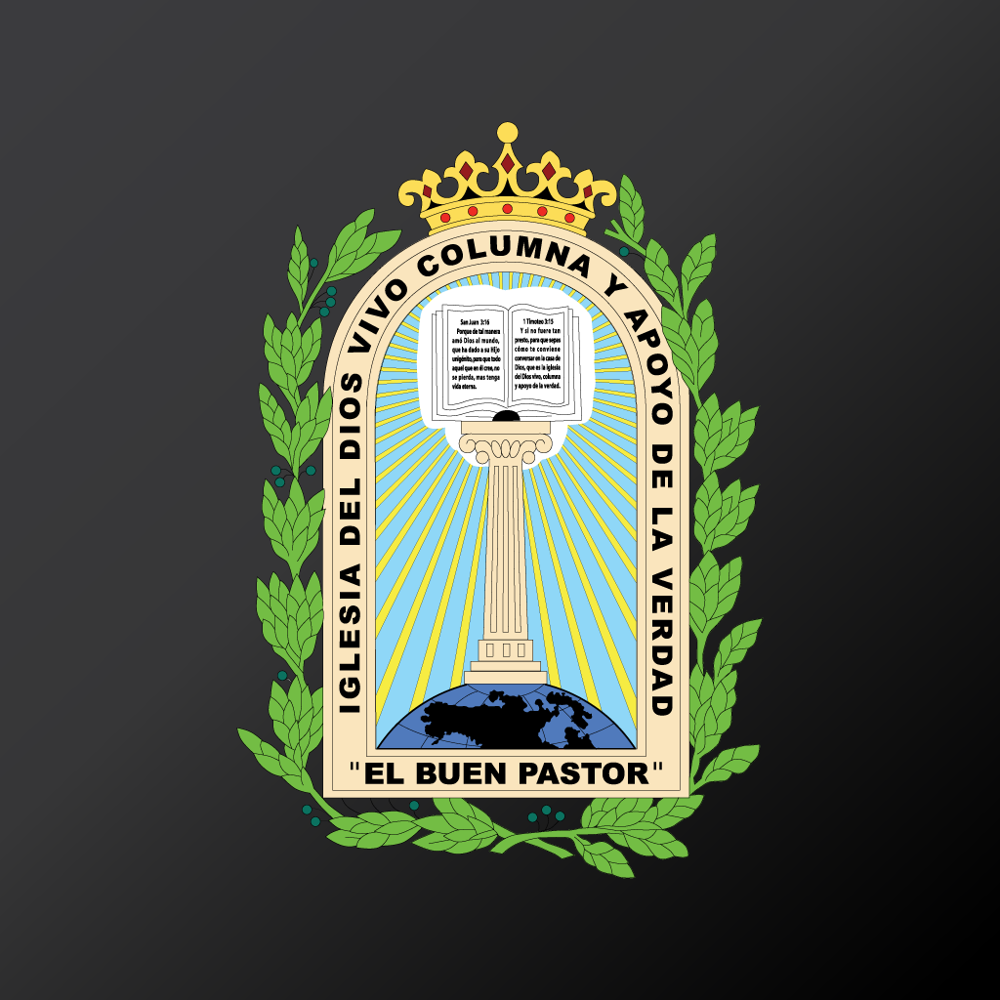

Himno 315 A
Alabanza

Una noche soñaba yo así; Que mi Cristo venía por mí. Oh, qué gozo mi alma sintió, Por Su gracia que mi alma alcanzó.
Y parado a la orilla del mar, Alcé mis ojos al cielo y miré, A Jesús que venía por mí Y mi alma con Cristo se fue.
Al despertar de mi sueño ahí, De rodillas caí en oración; Dando gracias a mi Salvador, Por Su gracia que me impartió.
Ahora vivo pensando en Su amor, Esperando ese día que vi, En las nubes por mi alma Él vendrá Y por siempre con Él yo estaré.